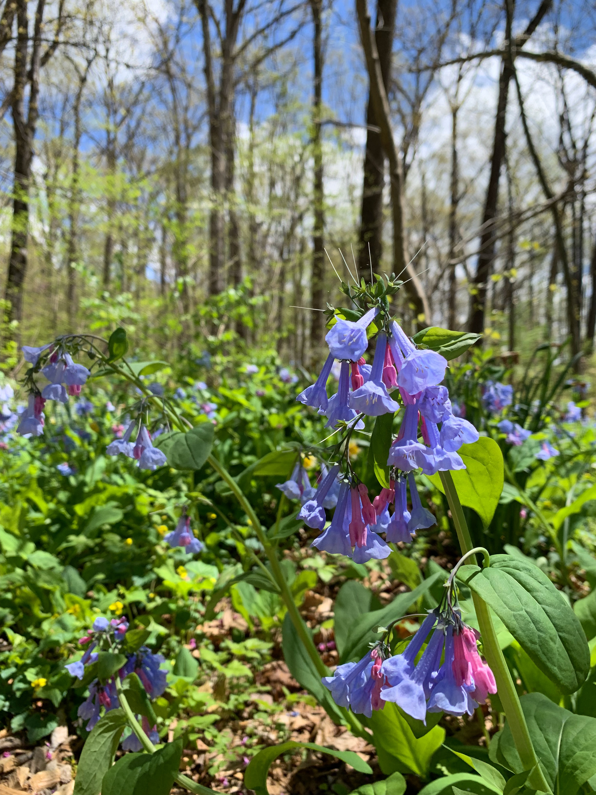
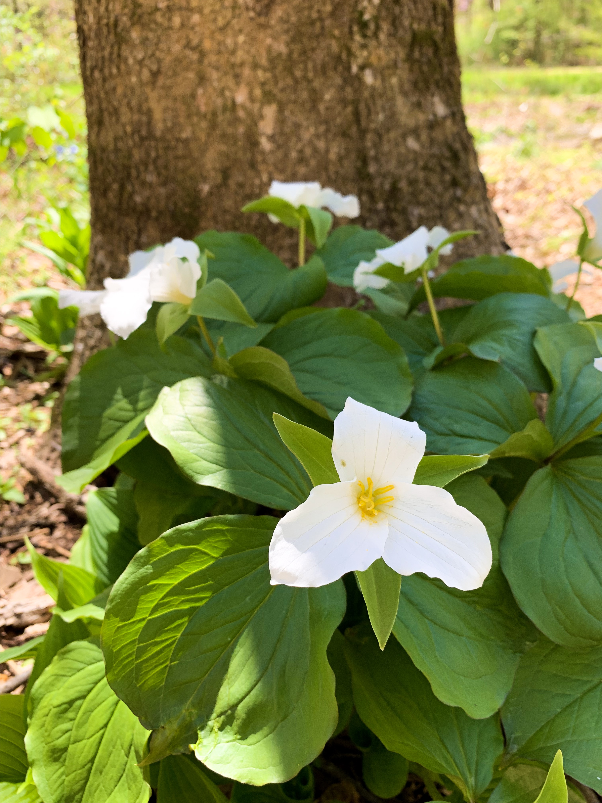
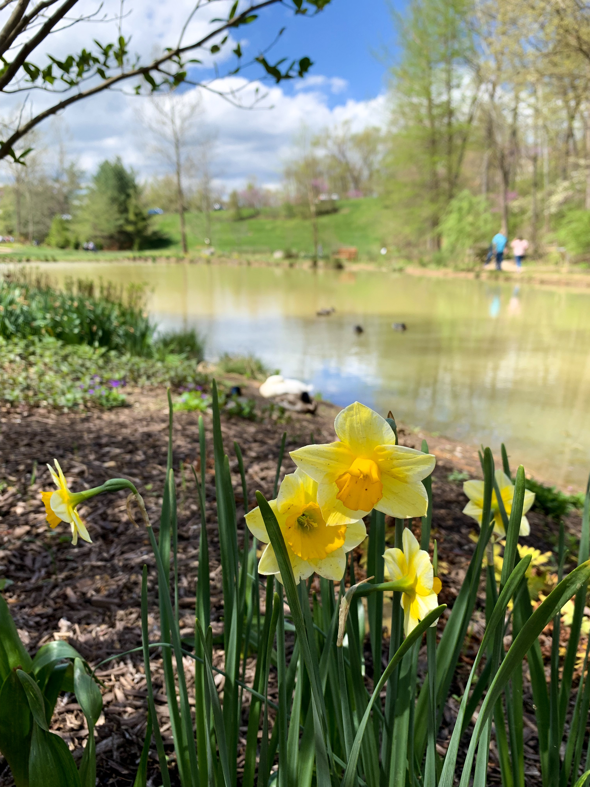
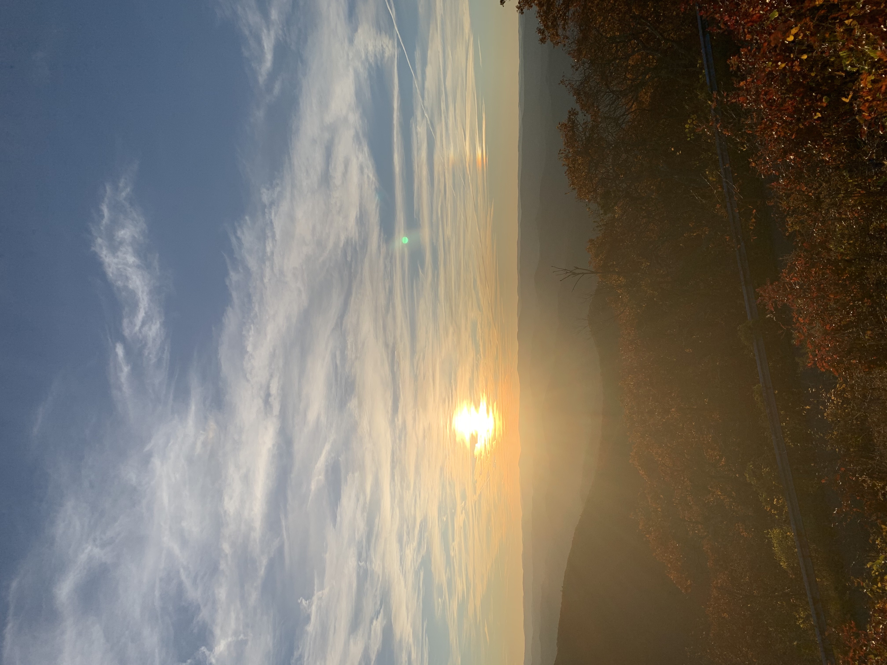
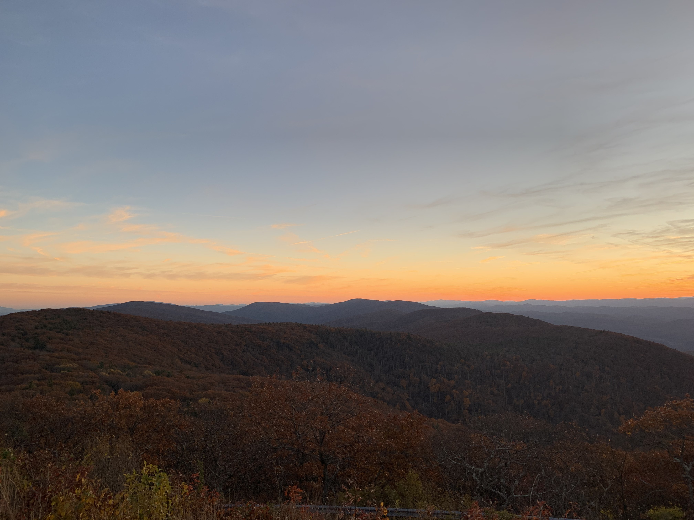
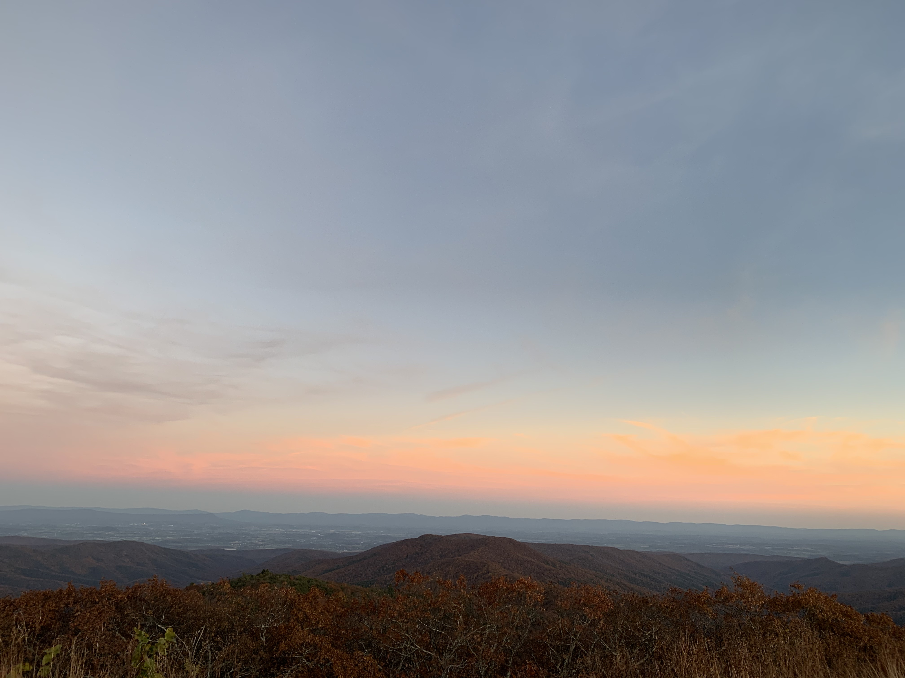
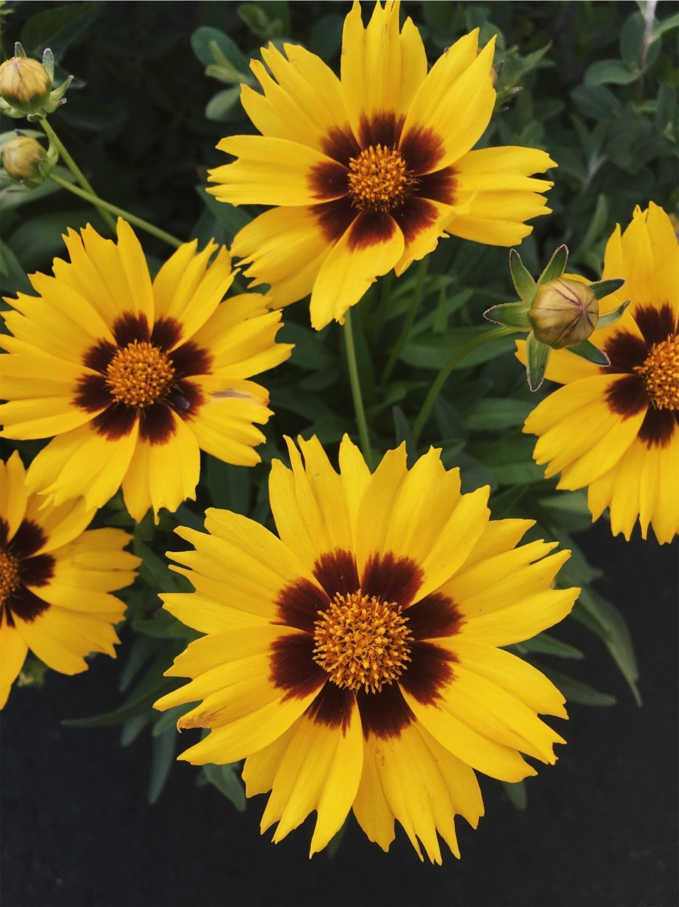
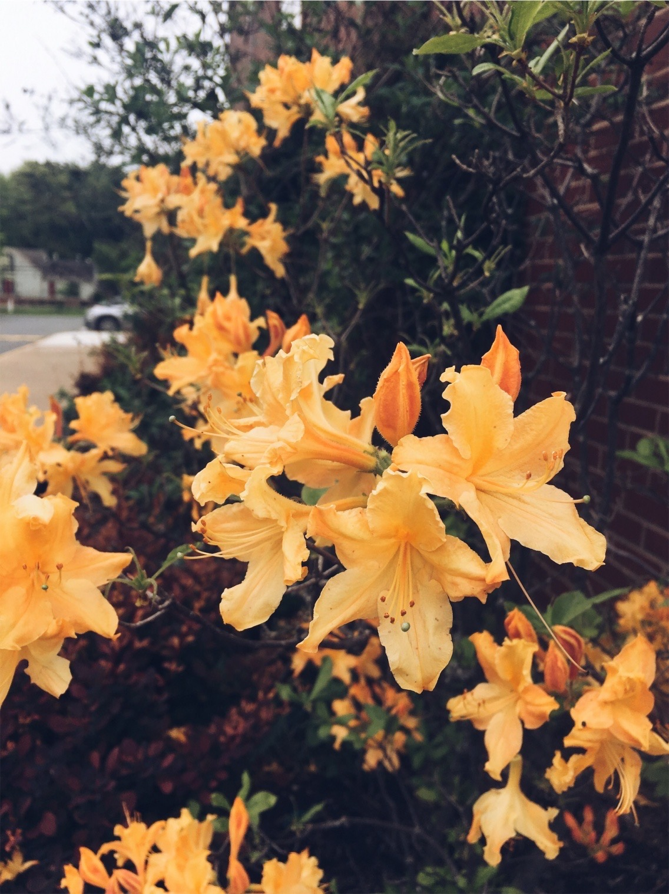
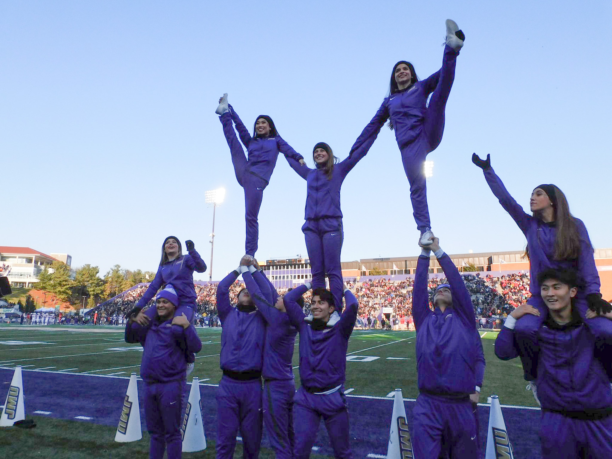

I am a very go-go-go type of person. I am athletic, and very competitive, and I am always laughing; but I also know when it is time to be serious and
Below you will find some photographs that I feel like reflect who I am and what I enjoy. Most of them I have taken but a few I have not. I believe that these photographs also reflect the type of energy/feeling that I want my webpage to give off.
        The following is a list of adjectives that I feel best tell who I am.
I have also included a list of colors that I really enjoy and that I feel reflect how I feel most of the time.
Here is a link to a website that I find inspirational. Design wise, it is set up like a news site, but the content it has I always find useful. You can sign up for daily emails from them which will keep you up to date with what is new that day.
www.creativebloq.com